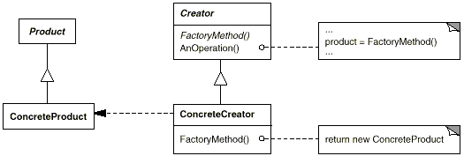
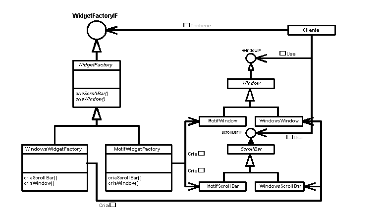

GoFs Criacionais
Histórico de Revisão:
| Data | Versão | Descrição | Autor |
|---|---|---|---|
| 20/05/2019 | 0.1 | Adicionando Multiton GOF | Gabriela Guedes |
| 20/05/2019 | 0.2 | Adicionando Factory Method GOF | Renan Schadt |
| 23/05/2019 | 0.3 | Adicionando Singleton e Abstract Factory GOFs | Helena Goulart |
| 28/06/2019 | 0.4 | Arruma analise do Multiton | Gabriela Guedes |
| 11/05/2019 | 0.5 | Adição dos topicos | Davi Alves e Luiz Guilherme |
| 17/06/2019 | 0.6 | Unindo os documentos de GoFs criacionais em um só | Helena Goulart |
1. Introdução
Um padrão de projeto é uma solução geral e reutilizável para um problema comum de software. Eles são modelos que podem ser reutilizados e personalizados para resolver um problema específico de design em muitas situações diferentes. Os padrões do tipo criacionais lidam na forma como os objetos e classes são criados para atenderem necessidades distintas.
2. GoFs Criacionais
2.1 Factory Method
2.1.1 Definição
O Factory Method é um padrão de design criacional que provê uma interface para criação de objetos em uma superclasse, mas permite que as subclasses alterem o tipo dos objetos que serão criados, este padrão sugere a substituição de chamadas diretas de construção de objeto, com chamadas para um método especial de criação.
O padrão Factory Method contém os seguintes elementos:
-
Uma interface ilustrando um Produto (ex: Carro), contendo métodos (ex: acelerar, frear) e atributos (ex: cor, volume do porta malas) que pertençam a todos produtos.
-
Uma especialização de Produto, Produto Concreto (ex: Carro Honda, Carro Fiat), que contenha a implementação dos métodos definidos na interface, e possíveis métodos e atributos extras.
-
Uma classe Criador (Fábrica de Carros), que contenha um método de criação base, que pode ser sobrescrito pelas suas filhas e que retorne um Produto. O Criador pode ser uma classe abstrata para forçar que as filhas implementem suas próprias versões de seus métodos, ou uma classe padrão, que pode criar um Produto Concreto.
-
Uma especialização de Criador, Criador Concreto (ex: Fábrica de Carros Honda, Fábrica de Carros Fiat), que sobrescreve o método base do Criador e returna um tipo diferente de Produto.
No tópico 2.1.3, uma imagem ilustra a estrutura mínima desse padrão, para melhor visualizar os conceitos descritos acima.
2.1.2 Análise
A análise feita pelo grupo é de que o padrão Factory Method pode ser implementado no projeto. O texto submetido pelo usuário autor, na nossa aplicação, contém um nível de complexidade, definido por esse mesmo usuário, níveis de complexidade diferentes exigem mudança no valor final da tradução, no prazo de entrega, no número de revisões feitas, entre outros.
A partir desta ideia podemos definir que: O texto seria nosso Produto, os textos com complexidade Fácil, Média ou Avançada, seriam nossos Produtos Concretos. Eles teriam um Criador (Fábrica de Textos), com um método de criação a ser sobrescrito pelas classes filhas (Fábrica de Texto com Complexidade Fácil, Fábrica de Texto com Complexidade Média).
Assim teremos uma solução elegante para criação de objetos de texto, dando poucas atribuições a cada classe, facilitando a manutenção e caso seja preciso adicionar um novo nível de complexidade, é possível fazê-lo facilmente, sem quebrar o processo de criação dos Produtos Concretos já existentes.
2.1.3 Estrutura Mínima

2.2 Multiton
2.2.1 Definição
O multiton consiste na utilização de um método para retornar um objeto. Esse método deve receber uma chave, e caso já exista um objeto com essa chave, ele é retornado, caso contrário, um novo objeto é criado. O multiton é considerado uma extensão do padrão de projeto singleton, onde o método de criação de objetos deve ser privado e que só permite a criação de uma instância para a classe, no caso do multiton, é utilizado um dicionário para agrupar todas as instancias geradas.
2.2.2 Análise
É possivel a implementação do Multiton em python, veja o exemplo abaixo:
def multiton(cls):
instances = {}
def getinstance(id):
if id not in instances:
instances[id] = cls(id)
return instances[id]
return getinstance
@multiton
class MyObject( object ):
def __init__( self, arg):
self.id = arg
a = MyObject(1)
b = MyObject(2)
c = MyObject(2)
print("Should be False:")
print(a is b)
print("Should be True:")
print(b is c)
Entretanto, não é possível aplica-lo em Django. Devido ao uso das serializers para a criação de uma nova instância da classe, não é possivel adapta-la para este padrão de projeto.
2.2.3 Estrutura Mínima

- Mapeamento das instâncias a partir da chave
- Inicializador da classe
- Método
getInstance()que retorna um objeto da classe
2.3 Abstract Factory
2.3.1 Definição
Trata-se da criação de famílias de objetos relacionados ou dependentes por meio de apenas uma interface gráfica e sem que a classe concreta seja especificada. Logo, a estrutura mínima de um Abstract Factory exige todas as estruturas da imagem acima:
- ProdutoAbstratoA e ProdutoAbstratoB: classe abstrata para seus respectivos tipos de produtos;
- ProdutoA1, ProdutoA2, ProdutoB1 e ProdutoB2: definem produtos criados pela fábrica concreta, que implementa a interface declarada em ProdutoAbstratoA (para ProdutoA1 e ProdutoA2) e em ProdutoAbstratoB (para ProdutoB1 e ProdutoB2);
- FabricaAbstrata: classe ou interface abstrata para operações de criação de produtos;
- FabricaConcreta1 e FabricaConcreta2: Implementam as operações para criar objetos para produtos concretos.
2.3.2 Análise
- É utilizado quando um sistema deve ser independente de como seus produtos relacionados são criados e representados;
- É aplicável em casos onde uma família de produtos foi projetada para uso conjunto e é necessária implementar uma restrição;
Em virtude dos pontos apresentados anterioremnte, conclui-se que ele pode ser aplicado no translate.me, como por exemplo: um mesmo usuário pode ser tradutor e usário a ter seu texto traduzido. Logo, ambos possuem características em comum, mas também características específicas que precisam ser desenvolvidas separadamente.
2.3.3 Estrutura mínima

2.4 Singleton
2.4.1 Definição
Conforme incita o próprio nome, os padrões de projeto do tipo Singleton possibilitam criar objetos únicos para os quais há apenas uma instância, permitindo acesso a ela através de um ponto global. Dessa forma, uma classe gerencia sua própria instância e nenhuma outra classe poderá gerenciá-la.
2.4.2 Análise
O Singleton pode ser utilizado no translate.me. Por ser recomendado quando é necessário controlar como e quando a instância será acessada, como por exemplo dados de pagamento que incluem informações pessoais de cartão de cŕedito.
2.4.3 Estrutura mínima

2.5 Prototype
2.5.1 Explicação
Criar objetos com base em um modelo de um objeto existente por meio de clonagem, ou seja, ele é usado quando o tipo de objeto a ser criado é determinado por uma instância prototípica, que é clonada para produzir novos objetos.
2.5.2 Quando deve ser usado
- Quando a composição, criação e representação de objetos devem ser dissociadas de um sistema.
- As classes a serem criadas são especificadas no tempo de execução.
- Um número limitado de combinações de estados existe em um objeto.
- Objetos ou estruturas de objeto são requeridos que são idênticos ou se assemelham a outros objetos ou estruturas de objetos existentes.
- A criação inicial de cada objeto é uma operação custosa.
2.5.3 Estrutura mínima

Exemplo de diagrama de classe UML para o desenho de padrão do modelo "Prototype"
2.6 Object Pool
2.6.1 Explicação
O agrupamento de objetos pode oferecer um aumento de desempenho significativo em situações em que o custo de inicializar uma instância de classe é alto, a taxa de instanciação de uma classe é alta e o número de instâncias em uso a qualquer momento é baixo. O "object pool" é obtido em tempo previsível, o que torna esse padrão útil para sistemas em tempo real.
2.6.2 Quando deve ser usado
- A criação inicial de cada objeto é uma operação custosa.
- A frequência de criação de outros objetos também é alta.
- O número de objetos em uso é pequeno.
2.6.3 Estrutura mínima

Exemplo de diagrama de classe UML para o desenho de padrão do modelo "Object Pool"
2.7 Builder
2.7.1 Explicação
Permite a criação dinâmica de objetos com base em algoritmos facilmente intercambiáveis.Esse padrão permite que um objeto cliente construa um objeto complexo especificando apenas seu tipo e conteúdo, sendo protegido dos detalhes relacionados à representação de objetos.
2.7.2 Quando deve ser usado
- Algoritmos de criação de objetos devem ser desacoplados do sistema.
- Várias representações de algoritmos de criação são necessárias.
- A adição de nova funcionalidade de criação sem alterar o código principal é necessária.
- O controle de tempo de execução sobre o processo de criação é necessário.
2.7.3 Estrutura mínima

Exemplo de diagrama de classe UML para o desenho de padrão do modelo "builder".
3. Referências
3.1 Links de sites
- UFCG - Abstract Factory
- DevMedia - Singleton.
- Black Wasp - Multiton
- Stack Overflow
- Refactoring Guru - Factory Method
- Aula GoFs Criacionais - Milene Serrano
- Circle Visual - GOF
- O Design - Object Pool Pattern
- Medium - Object Pool
- Circle Visual Paradigm - Builder
- O Design - Builder Pattern
3.2 Livros e artigos
[1] NOBLE, James. GOF patterns for GUI Design. preprint of Macquarie University, Sydney Australia, 1997.
[2] ELLIS, Brian; STYLOS, Jeffrey; MYERS, Brad. The factory pattern in API design: A usability evaluation. In: Proceedings of the 29th international conference on Software Engineering. IEEE Computer Society, 2007. p. 302-312